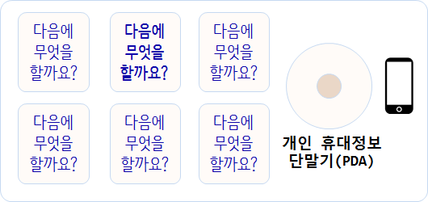
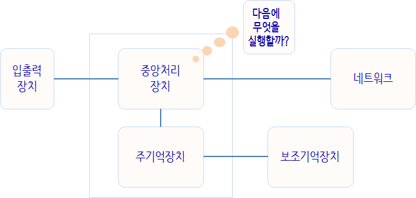
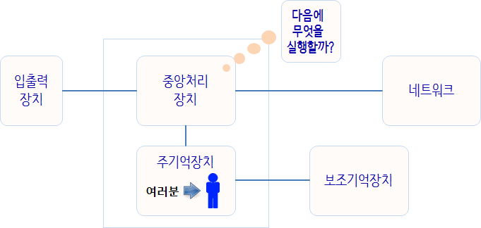

Chapter 1 왜 프로그래밍을 배워야 하는가?
컴퓨터 프로그램을 만드는 행위(프로그래밍)는 매우 창의적이며 향후 뿌린 것 이상으로 얻을 것이 많다. 프로그램을 만드는 이유는 어려운 자료분석 문제를 해결하려는 것에서부터 다른사람의 문제를 해결해주는데 재미를 느끼는 것까지 다양한 이유가 있다. 이 책을 통해서 모든 사람이 어떻게 프로그램을 만드는지를 알고, 프로그램이 어떻게 만드는지를 알게 되면, 새로 습득한 프로그래밍 기술로 하고자 하는 것을 해결할 수 있게 된다.
우리의 일상은 노트북에서부터 스마트폰까지 다양한 종류의 컴퓨터에 둘러싸여 있다. 이러한 컴퓨터를 우리를 위해서 많은 일을 대신해 주는 “개인비서”로 생각한다. 일상생활에서 접하는 컴퓨터 하드웨어는 우리에게 “다음에 무엇을 하면 좋겠습니까?” 라는 질문을 지속적으로 던지게 만들어 졌다.

프로그래머는 운영체제와 하드웨어에 응용 프로그램을 추가했고, 결국 많은 것들을 도와주는 개인 휴대 정보 단말(Persoanl Digital Assistant, PDA)로 진화했다. 최근에는 인공지능 기능이 탑재된 스마트폰(Smart Phone)이 그 역할을 대신하고 있다.
사용자 여러분이 컴퓨터에게 “다음 실행해 (do next)”를 컴퓨터가 이해할 수 있는 언어로 지시를 할 수만 있다면, 컴퓨터는 빠르고, 저장소가 커서, 매우 유용하게 사용될 수 있다. 만약 컴퓨터 언어를 알고 있다면, 반복적인 작업을 사람을 대신해서 컴퓨터에 지시할 수 있다. 흥미롭게도, 컴퓨터가 가장 잘 할 수 있는 종류의 작업들은 종종 사람들이 재미없고, 너무나 지루하다고 생각하는 것이다.
예를 들어, 이번 장의 첫 세 문단을 보고, 가장 많이 나오는 단어를 찾아보고 얼마나 자주 나오는지를 알려주세요. 사람이 몇초내에 단어를 읽고 이해할 수는 있지만, 그 단어가 몇번 나오는지 세는 것은 매우 고생스러운 작업이다. 왜냐하면 사람이 지루하고 반복되는 문제를 해결하는데 적합하지 않기 때문이다. 컴퓨터는 정반대이다. 논문이나 책에서 텍스트를 읽고 이해하는 것은 컴퓨터에게 어렵다. 하지만, 단어를 세고 가장 많이 사용되는 단어를 찾는 것은 컴퓨터에게는 무척이나 쉬운 작업이다.
R words.R
Enter file: words.txt
to 16우리의 개인 정보분석 도우미는 이번장의 첫 세 문단에서 단어 “to” 가 가장 많이 사용되었고, 16번 나왔다고 바로 답을 준다.
사람이 잘하지 못하는 점을 컴퓨터가 잘할 수 있다는 사실을 이해하면 왜 “컴퓨터 언어”로 컴퓨터와 대화해야 하는데 능숙해야하는지 알 수 있다. 컴퓨터와 대화할 수 있는 새로운 언어(R 혹은 파이썬)를 배우게 되면, 지루하고 반복되는 일을 컴퓨터가 처리하고, 사람에게 적합한 일을 하는데 더 많은 시간을 할애할 수 있다. 그래서, 여러분은 직관, 창의성, 창의력을 컴퓨터 파트너와 함께 추진할 수 있다.
1.1 창의성과 동기
이책은 직업으로 프로그래밍을 하는 사람을 위해서 저작된 것은 아니지만, 직업적으로 프로그램을 만드는 작업은 개인적으로나 경제적인면에서 꽤 매력적인 일이다. 특히, 유용하며, 심미적이고, 똑똑한 프로그램을 다른 사람이 사용할 수 있도록 만드는 것은 매우 창의적인 활동이다. 다양한 그룹의 프로그래머들이 사용자의 관심과 시선을 차지하기 위해서 경쟁적으로 작성한 다양한 종류의 프로그램이 여러분의 컴퓨터와 개인 휴대 정보 단말기(Personal Digital Assistant, PDA)에 담겨있다. 이렇게 개발된 프로그램은 사용자가 원하는 바를 충족시키고 훌륭한 사용자 경험을 제공하려고 노력한다. 몇몇 상황에서 사용자가 소프트웨어를 골라 구매하게 될 때, 고객의 선택에 대해 프로그래머는 바로 경제적 보상을 받게 된다.
만약 프로그램을 프로그래머 집단의 창의적인 결과물로 생각해본다면, 아마도 다음 그림이 좀더 의미 있는 PDA 컴퓨터 혹은 스마트폰으로 보일 것이다.
우선은 프로그래을 만드는 주된 동기가 사업을 한다던가 사용자를 기쁘게 한다기보다, 일상생활에서 맞닥뜨리는 자료와 정보를 잘 다뤄 좀더 생산적으로 우리의 삶을 만드는데 초점을 잡아본다. 프로그램을 만들기 시작할 때, 여러분 모두는 프로그래머이면서 동시에 자신이 만든 프로그램의 사용자가 된다. 프로그래머로서 기술을 습득하고 프로그래밍 자체가 좀더 창의적으로 느껴진다면, 여러분은 다른 사람을 위해 프로그램을 개발하게 준비가 된 것이다.
1.2 컴퓨터 하드웨어 아키텍처
소프트웨어 개발을 위해 컴퓨터에 지시 명령어를 전달하기 위한 컴퓨터 언어를 학습하기 전에, 컴퓨터가 어떻게 구성되어 있는지 이해할 필요가 있다. 컴퓨터 혹은 핸드폰을 분해해서 안쪽을 살펴보면, 다음과 같은 주요 부품을 확인할 수 있다.
주요 부품의 상위 수준 정의는 다음과 같다.

- 중앙처리장치(Central Processing Unit, CPU): 다음 무엇을 할까요? (“What is next?”) 명령어를 처리하는 컴퓨터의 주요 부분이다. 만약 컴퓨터 중앙처리장치가 3.0 GHz 라면, 초당 명령어 (다음 무엇을 할까요? What is next?)를 삼백만번 처리할 수 있다는 것이다. CPU 처리속도를 따라서 빠르게 컴퓨터와 어떻게 대화하는지 학습할 것이다.
- 주기억장치(Main Memory): 주기억장치는 중앙처리장치(CPU)가 급하게 명령어를 처리하기 하는데 필요한 정보를 저장하는 용도로 사용된다. 주기억장치는 중앙처리장치만큼이나 빠르다. 그러나 주기억장치에 저장된 정보는 컴퓨터가 꺼지면 자동으로 지워진다.
- 보조 기억장치(Secondary Memory): 정보를 저장하기 위해 사용되지만, 주기억장치보다 속도는 느리다. 전기가 나갔을 때도 정보를 기억하는 것은 장점이다. 휴대용 USB나 휴대용 MP3 플레이어에 사용되는 USB 플래쉬 메모리나 디스크 드라이브가 여기에 속한다.
- 입출력장치(Input Output Devices): 간단하게 화면, 키보드, 마우스, 마이크, 스피커, 터치패드가 포함된다. 컴퓨터와 사람이 상호작용하는 모든 방식이 포함된다.
- 네트워크(Network): 요즘 거의 모든 컴퓨터는 네트워크로 정보를 주고 받는 네트워크 연결(Network Connection) 하드웨어가 있다. 네트워크는 항상 “이용가능” 하지 않을지도 모르는 데이터를 저장하고 가져오는 매우 느린 저장소로 볼 수 있다. 그러한 점에서 네트워크는 좀더 느리고, 때때로 신뢰성이 떨어지는 보조 기억장치(Secondary Memory)의 한 형태로 볼 수 있다.
주요 부품들이 어떻게 작동하는지에 대한 세세한 사항은 컴퓨터 제조자에게 맡겨져 있지만, 프로그램을 작성할 때 컴퓨터 주요 부품에 대해서 언급되어서, 컴퓨터 전문용어를 습득하고 이해하는 것은 도움이 된다.
프로그래머로서 임무는 자료를 분석하고 문제를 해결하도록, 컴퓨터 자원 각각을 사용하고 조율하는 것이다. 프로그래머로서 대체로 CPU와 “대화”해서 다음 무엇을 실행하라고 지시한다. 때때로 CPU에 주기억장치, 보조기억장치, 네트워크, 혹은 입출력장치도 사용하라고 지시한다.

프로그래머는 컴퓨터의 “다음 무엇을 수행할까요?”에 대한 답을 하는 사람이기도 하다. 하지만, 컴퓨터에 답하기 위해서 5mm 크기로 프로그래머를 컴퓨터에 집어넣고 초당 30억개 명령어로 답을 하게 만드는 것은 매우 불편하다. 그래서, 대신에 미리 컴퓨터에게 수행할 명령문을 작성해야 한다. 이렇게 미리 작성된 명령문 집합을 프로그램(Program)이라고 하며, 명령어 집합을 작성하고 명령어 집합이 올바르게 작성될 수 있도록 하는 행위를 프로그래밍(Programming)이라고 부른다.
1.3 프로그래밍 이해하기
책의 나머지 장을 통해서 책을 읽고 있는 여러분을 프로그래밍 장인으로 인도할 것이다. 종국에는 책을 읽고 있는 여러분 모두 프로그래머가 될 것이다. 아마도 전문적인 프로그래머는 아닐지라도 적어도 자료/정보 분석 문제를 보고 그 문제를 해결할 수 있는 기술을 가지게는 될 것이다.
이런 점에서 프로그래머가 되기 위해서 두 가지 기술이 필요하다.
- 첫째, R 혹은 파이썬(Pythong)같은 프로그래밍 언어 - 어휘와 문법을 알 필요가 있다. 단어를 새로운 언어에 맞추어 작성할 수 있어야 하며 새로운 언어로 잘 표현된 “문장”으로 어떻게 작성하는지도 알아야 한다.
- 둘째, 스토리(Story)를 말 할 수 있어야 한다. 스토리를 작성할 때, 독자에게 아이디어(idea)를 전달하기 위해서 단어와 문장을 조합합니다. 스토리를 구성할 때 기술적인 면과 예술적인 면이 있는데, 기술적인 면은 쓰기 연습을 반복하고, 피트백을 받아 향상된다. 프로그래밍에서, 우리가 작성하는 프로그램은 “스토리”가 되고, 해결하려고 하는 문제는 “아이디어”에 해당된다.
R 혹은 파이썬과 같은 프로그래밍 언어를 배우게 되면, 자바스크립트나 C++, 고(Go) 같은 두번째 언어를 배우는 것은 무척이나 쉽다. 새로운 프로그래밍 언어는 매우 다른 어휘와 문법을 갖지만, 문제를 해결하는 기술을 배우면, 다른 모든 프로그래밍 언어를 통해서 동일하게 접근할 수 있습니다.
파이썬 어휘와 문장은 매우 빠르게 학습할 수 있다. 새로운 종류의 문제를 풀기 위해 논리적인 프로그램을 작성하는 것은 더 오래 걸린다. 여러분은 작문을 배우듯이 프로그래밍을 배우게 된다. 프로그래밍을 읽고 설명하는 것으로 시작해서, 간단한 프로그램을 작성하고, 점차적으로 복잡한 프로그램을 작성할 것이다. 어느 순간에 명상에 잠기게 되고, 스스로 패턴이 눈에 들어오게 된다. 그러면, 좀더 자연스럽게 문제를 어떻게 받아들이고, 그 문제를 해결할 수 있는 프로그램을 작성하게 된다. 마지막으로, 그 순간에 도착하게 되면, 프로그래밍은 매우 즐겁고 창의적인 과정이 된다.
파이썬 프로그램의 어휘와 구조로 시작한다. 간단한 예제가 처음으로 언제 프로그램을 읽기 시작했는지를 상기시켜주니 인내심을 가지세요.
1.4 단어와 문장
사람 언어와 달리, R 어휘는 사실 매우 적다. R 어휘를 예약어(researved words)로 부른다. 이들 단어는 R에 매우 특별한 의미를 부여한다. R 프로그램 관점에서 R이 이들 단어를 보게 되면, R에게는 단 하나의 유일한 의미를 갖는다. 나중에 여러분들이 프로그램을 작성할 때, 자신만의 단어를 작성하는데 이를 변수(Variable)라고 한다. 변수 이름을 지을 때 폭넓은 자유를 갖지만, 변수 이름으로 파이썬 예약어를 사용할 수는 없다.
이런 점에서 강아지를 훈련시킬 때 “걸어(walk)”, “앉아”, “기달려”, “가져와” 같은 특별한 어휘를 사용한다. 강아지에게 이와 같은 특별한 예약어를 사용하지 않을 때는, 주인이 특별한 어휘를 사용할 때까지 강아지는 주인을 물끄러미 쳐다보기만 한다. 예를 들어, “더 많은 사람들의 건강을 전반적으로 향상하는 방향으로 동참하여”걷기(walk)“를 원한다”고 말하면, 강아지가 듣는 것은 “뭐라 뭐라 뭐라 걷기(walk) 뭐라”와 같이 들릴 것이다. 왜냐하면 “걸어(walk)”가 강아지 언어에는 예약어3이기 때문이다. 이러한 사실이 아마도 개와 고양이사이에는 어떠한 예약어도 존재하지 않는다는 것을 의미할지 모른다.
사람이 R과 대화하는 언어 예약어는 다음과 같다. R 콘솔에서 ? researved 명령어를 입력하면 자세한 내용을 파악할 수 있다. 파이썬과 비교해도 상대적으로 데이터 분석에 집중된 것을 예약어만을 통해서도 쉽게 파악된다.
| R 예약어 | 설명 |
|---|---|
| If, else, repeat, while, function, for, in, next, break | 조건, 함수, 반복문에 사용 |
| TRUE, FALSE | 논리 상수(Logical constants) |
| NULL | 정의되지 않는 값 혹은 값이 없음을 표현 |
| Inf | 무한(Infinity) |
| NaN | 숫자가 아님(Not a Number) |
| NA | 결측값, 값이 없음 (Not Available) |
| NA_integer_, NA_real_, NA_complex_, NA_character_ | 결측값 처리하는 상수 |
| … | 함수가 다른 함수에 인자를 전달하도록 지원 |
강아지 사례와 사뭇 다르게 R은 이미 완벽하게 훈련이 되어 있다. 여러분이 “try” 라고 말하면, 매번 “try” 라고 말할 때마다 실패 없이 R은 항시 정확히 시도한다.
상기 예약어를 학습하고, 어떻게 잘 사용되는지도 함께 학습할 것이지만, 지금은 파이썬에 말하는 것에 집중할 것이다. R과 대화하는 것 중 좋은 점은 다음과 같이 괄호내부에 인용부호로 감싸 메세지를 던지는 것만으로도 R에 말을 할 수 있다는 것이다.
print("헬로 월드!")## [1] "헬로 월드!"상기 간단한 문장은 R 구문(Syntax)론적으로도 완벽하다. 상기 문장은 예약어 ’print’로 시작해서 출력하고자 하는 문자열을 괄호내부에 작은 따옴표로 감싸서 올바르게 R에게 전달했다.
1.5 R과 대화하기
R로 우리가 알고 있는 단어를 가지고 간단한 문장을 만들었으니 이제부터는 새로운 언어 기술을 시험하기 위해서 파이썬과 대화를 어떻게 시작하는지 알 필요가 있다.
R과 대화를 시작하기 전에, R 소프트웨어를 컴퓨터에 설치하고 R을 컴퓨터에서 어떻게 실행하는지를 학습해야 한다. 이번 장에서 다루기에는 너무 구체적이고 자세한 사항이기 때문에 http://statkclee.github.io/data-science/을 참조하는 것을 권한다. 윈도우와 리눅스, 매킨토쉬 시스템 상에서 설치하고 실행하는 방법을 자세한 설치절차와 함께 화면을 캡쳐하여 다양한 환경에서 설명해 놨다. 설치가 마무리되고 터미널이나 윈도우 명령어 실행창에서 R을 타이핑 하게 되면, R 인터프리터가 인터랙티브 모드로 실행을 시작하고 다음과 같은 것이 화면에 뿌려진다.
R version 3.4.2 (2017-09-28) -- "Short Summer"
Copyright (C) 2017 The R Foundation for Statistical Computing
Platform: x86_64-w64-mingw32/x64 (64-bit)
R is free software and comes with ABSOLUTELY NO WARRANTY.
You are welcome to redistribute it under certain conditions.
Type 'license()' or 'licence()' for distribution details.
R is a collaborative project with many contributors.
Type 'contributors()' for more information and
'citation()' on how to cite R or R packages in publications.
Type 'demo()' for some demos, 'help()' for on-line help, or
'help.start()' for an HTML browser interface to help.
Type 'q()' to quit R.
>R 인터프리터는 > 프롬프트를 통해서 여러분에게 요청사항(“다음에 R이 무엇을 실행하기를 원합니까?”)을 접수받는 방식을 취한다. 이제 R은 여러분과 대화를 나눌 준비가 되었다. 이제 남은 것은 R 언어로 어떻게 말하고 어떻게 R과 대화하는지 아는 것이다.
예를 들어, 여러분이 가장 간단한 R 언어 단어나 문장 조차도 알 수가 없다고 가정하자. 우주 비행사가 저 멀리 떨어진 행성에 착륙해서 행성의 거주민과 대화를 시도할 때 사용하는 간단한 말을 사용해 보자.
> I come in peace, please take me to your leader
Error: unexpected symbol in "I come"
> 잘 되는 것 같지 않다. 뭔가 빨리 다른 생각을 내지 않는다면, 행성 거주민은 여러분을 창으로 찌르고, 침으로 바르고, 불위 잘 구워 바베큐로 만들어 저녁으로 먹을 듯 하다.
운 좋게도 기나긴 우주 여행 중 이 책의 복사본을 가지고 와서 다음과 같이 빠르게 타이핑한다고 생각하자.
print("헬로 월드!")## [1] "헬로 월드!"훨씬 좋아보인다. 이제 좀더 커뮤니케이션을 이어갈 수 있을 것으로 보인다.
print('You must be the legendary god that comes from the sky')
print('We have been waiting for you for a long time')
print('Our legend says you will be very tasty with mustard')
print('We will have a feast tonight unless you say) #'이번 대화는 잠시 동안 잘 진행되다가 여러분이 R 언어로 말하는데 정말 사소한 실수를 저질러 R이 다시 창을 여러분에게 겨눈다.
이 시점에 R은 놀랍도록 복잡하고 강력하며 R과 의사소통을 할 때 사용하는 구문(syntax)은 매우 까다롭다는 것은 알 수 있다. R은 다른 말로 안 똑똑(Intelligent)하다. 지금까지 여러분은 자신과 대화를 적절한 구문(syntax)을 사용해서 대화했다.
여러분이 다른 사람이 작성한 프로그램을 사용한다는 것은 R을 사용하는 다른 프로그래머가 R을 중간 매개체로 사용하여 대화한 것으로 볼 수 있다. 프로그램을 만든 저작자가 대화를 어떻게 진행되어져야 하는지를 표현하는 방식이다. 다음 몇 장에 걸쳐서 다른 많은 프로그래머 중의 한명처럼, R로 여러분이 작성한 프로그램을 이용하는 사용자와 대화하게 된다.
R 인터프리터와 첫번째 대화를 끝내기 전에, R 행성의 거주자에게 “안녕히 계세요”를 말하는 적절한 방법도 알아야 한다.
good-bye
if you don not mind, I need to leave
quit("yes")상기 처음 두개 시도는 다른 오류 메세지를 출력한다. 두번째 오류는 다른데 이유는 if가 예약어이기 때문에 R은 이 예약어를 보고 뭔가 다른 것을 말한다고 생각하지만, 잠시 후 구문이 잘못됐다고 판정하고 오류를 뱉어낸다.
R에 “안녕히 계세요”를 말하는 올바른 방식은 인터렉티브 > 프롬프트에서 quit() 혹은 q()를 입력하는 것이다.
1.6 전문용어: 인터프리터와 컴파일러
R은 상대적으로 직접 사람이 읽고 쓸 수도 있고, 컴퓨터도 읽고 처리할 수 있도록 고안된 하이 레벨(High-level), 고수준 언어이다. 다른 하이 레벨 언어에는 자바, C++, PHP, 루비, 베이직, 펄, 자바스크립트 등 다수가 포함되어 있다. 실제 하드웨어 중앙처리장치(CPU)내에서는 하이레벨 언어를 조금도 이해하지 못한다.
중앙처리장치는 우리가 기계어(machine-language)로 부르는 언어만 이해한다. 기계어는 매우 간단하고 솔직히 작성하기에는 매우 귀찮다. 왜냐하면 모두 0과 1로만 표현되기 때문이다.
01010001110100100101010000001111
11100110000011101010010101101101
...표면적으로 0과 1로만 되어 있기 때문에 기계어가 간단해 보이지만, 구문은 매우 복잡하고 R보다 훨씬 어렵다. 그래서 매우 소수의 프로그래머만이 기계어로 작성할 수 있다. 대신에, 프로그래머가 파이썬과 자바스크립트 같은 하이 레벨 언어로 작성할 수 있게 다양한 번역기(translator)를 만들었다.
이러한 번역기는 프로그램을 중앙처리장치에 의해서 실제 실행이 가능한 기계어로 변환한다.
기계어는 특정 컴퓨터 하드웨어에 묶여있기 때문에 기계어는 다른 형식의 하드웨어에는 이식(portable)되지 않는다. 하이 레벨 언어로 작성된 프로그램은 두 가지 방식으로 이기종의 컴퓨터로 이식이 가능하다. 한 방법은 새로운 하드웨어에 맞게 기계어를 재컴파일(recompile)하는 것이고, 다른 방법은 새로운 하드웨어에 맞는 다른 인터프리터를 이용하는 것이다.
프로그래밍 언어 번역기는 일반적으로 두가지 범주가 있다.
- 인터프리터(Interpreter)
- 컴파일러(Compiler)
인터프리터는 프로그래머가 코드를 작성할 때 소스 코드를 읽고, 소스코드를 파싱하고, 즉석에서 명령을 해석한다. R은 인터프리터다. 따라서, R을 인터렉트브 모드로 실행할 때, R 명령문(한 문장)을 작성하면, R이 즉석에서 처리하고, 사용자가 다른 R 명령어를 입력하도록 준비를 한다.
R 코드의 일부는 나중에 사용될 것이니 R에게 기억하도록 명령한다. 적당한 이름을 골라서 값을 기억시키고, 나중에 그 이름을 호출하여 값을 사용한다. 이러한 목적으로 저장된 값을 참조하는 목적으로 사용되는 표식(label)을 변수(variable)라고 한다.
x <- 6
x## [1] 6y <- x * 7
y## [1] 42상기 예제에서 R이 값 6 을 기억하고 있다가, 라벨 x를 사용하여 나중에 값을 가져오게 만들었다. 파이썬의 경우 print 예약어를 사용하여 파이썬이 잘 기억하고 있는지를 검증한다. 하지만, R이 파이썬과 비교하여 차이가 나는 점은 인터랙티브 방식으로 데이터 분석에 장점을 갖고 있어 바로 변수명 혹은 다른 자료구조명(요인, 데이터프레임 등)을 입력하면 변수명에 들어 있는 내용을 즉각 파악가능하다.
x를 가져와서 7을 곱하고 새로운 변수 y에 값을 집어 넣는다. 그리고 y에 현재 무슨 값이 저장되었는지 출력하라고 R에게 지시한다.
한줄 한줄 R에 명령어를 입력하고 있지만, 앞쪽 명령문에서 생성된 자료가 뒤쪽 실행 명령문에서 사용될 수 있도록 R은 순차적으로 정렬된 문장으로 처리한다. 방금전 논리적이고 의미있는 순서로 4줄 명령문을 간단하게 한 단락으로 작성했다.
위에서 본 것처럼 R과 인터랙티브하게 대화를 주고받는 것이 인터프리터의 본질이다. 컴파일러가 동작하기 위해서는 먼저 완전한 프로그램을 파일 하나에 담고, 하이 레벨 소스코드를 기계어로 번역하는 과정을 거치고, 마지막으로 나중에 실행되도록 변환된 기계어를 파일에 담는다.
윈도우를 사용한다면, 실행가능한 기계어 프로그램 확장자가 “.exe”(executable), 혹은 “.dll”(dynamically loadable library)임을 확인할 수 있다. 리눅스와 매킨토쉬에는 실행파일을 의미하는 특정 확장자는 없다.
텍스트 편집기에서 실행파일을 열게 되면, 다음과 같이 읽을 수 없는 좀 괴상한 출력결과를 화면상에서 확인한다.
^?ELF^A^A^A^@^@^@^@^@^@^@^@^@^B^@^C^@^A^@^@^@\xa0\x82
^D^H4^@^@^@\x90^]^@^@^@^@^@^@4^@ ^@^G^@(^@$^@!^@^F^@
^@^@4^@^@^@4\x80^D^H4\x80^D^H\xe0^@^@^@\xe0^@^@^@^E
^@^@^@^D^@^@^@^C^@^@^@^T^A^@^@^T\x81^D^H^T\x81^D^H^S
^@^@^@^S^@^@^@^D^@^@^@^A^@^@^@^A\^D^HQVhT\x83^D^H\xe8
....기계어를 읽고 쓰는 것은 쉽지 않다. 그래서 C 나 R, 파이썬 같은 하이 레벨 언어로 작성된 프로그램을 기계어로 자동 번역해주는 인터프리터와 컴파일러가 있다는 것은 멋진 일이다.
컴파일러와, 인터프리터를 논의하는 이 시점에, R 인터프리터 자체에 대해서 약간 궁금해야 한다. 무슨 언어로 작성되었을까? 컴파일된 언어로 작성되었을까? “R”을 타이핑하게 될 때, 정확하게 무슨 일이 일어나는걸까?
R 인터프리터는 하이 레벨 언어 “C”로 작성되었다. R 인터프리터 실제 소스 코드를 보려면, https://www.r-project.org/ 웹사이트에 가서 여러분의 방식으로 개발할 수 있는 소스코드를 확인할 수 있다. 그래서, R 그 자체도 프로그램이다. 기계어로 컴파일되어 있어서 R을 여러분의 컴퓨터에 설치(혹은 컴퓨터 제조자가 설치를 대신 해주기도 함)한다는 것은 번역된 R 프로그램 기계어 코드 사본을 여러분 컴퓨터에 복사하는 것에 불과하다. 윈도우 시스템에서 R 실행가능한 기계어 코드는 파일에 다음과 같은 이름을 갖는다.
C:\Program Files\R\R-3.4.1\bin\R.exe
지금까지 살펴본 것은 R 프로그래머가 되기 위해서 정말 알 필요가 있는 것 이상이다. 하지만, 때때로 처음에 이런 귀찮은 질문에 바로 답하는 것이 나중에 보상을 충분히 하고도 남는다.
1.7 프로그램 작성하기
R 인터프리터에 명령어를 타이핑 하는 것은 R 주요 기능을 알아보는 좋은 방법이지만, 좀더 복잡한 문제를 해결하는데 권하지는 않는다.
프로그램을 작성할 때, 텍스트 편집기를 사용해서 스크립트(script)로 불리는 파일에 명령어 집합을 작성한다. 관례로, R 스크립트 확장자는 .R가 된다.
스크립트를 실행하기 위해서, R 인터프리터에 파일 이름을 넘겨준다. 유니스나 윈도우 명령창에서 R hello.R 를 입력하게 되면 다음과 같은 결과를 얻는다.
$ cat hello.R
print("헬로 월드!")
$ R hello.R
"헬로 월드!"
$“$”은 운영시스템 명령어 프롬프트이고, “R hello.R”는 문자열을 출력하는 한줄 R 프로그램을 담고 있는 “hello.R” 파일을 화면에 출력하라는 명령어입니다.
인터랙트브 모드에서 R 코드 입력하는 방식 대신에 R 인터프리터를 호출해서 “hello.R” 파일로부터 소스코드를 읽도록 지시합니다.
이 새로운 방식은 R 프로그램을 끝마치기 위해 quit()를 사용할 필요가 없다는 점에서 편리합니다. 파일에서 소스코드를 읽을 때, 파일 끝까지 읽게 되면 자동으로 R이 종료됩니다.
1.8 프로그램이란 무엇인가?
프로그램(Program)의 가장 본질적인 정의는 특정 작업을 수행할 수 있도록 조작된 일련의 R 문장의 집합이다. 가장 간단한 hello.R 스크립트도 프로그램이다. 한줄의 프로그램이 특별히 유익하고 쓸모가 있는 것은 아니지만 엄격한 의미에서 R 프로그램이 맞다.
프로그램을 이해하는 가장 쉬운 방법은 프로그램이 해결하려고 만들어진 문제를 먼저 생각해보고 나서, 그 문제를 풀어가는 프로그램을 살펴보는 것이다.
예를 들어, 페이스북에 게시된 일련의 글에서 가장 자주 사용된 단어에 관심을 가지고 소셜 컴퓨팅 연구를 한다고 생각해 봅시다. 페이스북에 게시된 글들을 쭉 출력해서 가장 흔한 단어를 찾으려고 열심히 들여다 볼 것이지만, 매우 오래 걸리고 실수하기도 쉽다. 하지만 R 프로그램을 작성해서 빨리 정확하게 작업을 마무리한다면 똑똑하게 주말을 재미나게 보낼 수 있다.
예를 들어 자동차(car)와 광대(clown)에 관한 다음 텍스트에서, 가장 많이 나오는 단어가 무엇이며 몇번 나왔는지 세어보세요.
the clown ran after the car and the car ran into the tent
and the tent fell down on the clown and the car그리고 나서, 몇 백만줄의 텍스트를 보고서 동일한 일을 한다고 상상해 보자. 솔직히 수작업으로 단어를 세는 것보다 R을 배워 프로그램을 작성하는 것이 훨씬 빠를 것이다.
더 좋은 소식은 이미 텍스트 파일에서 가장 자주 나오는 단어를 찾아내는 간단한 프로그램을 개발했다. 저자가 직접 작성했고, 시험까지 했다. 바로 사용을 할 수 있도록 준비했기 때문에 여러분의 수고도 덜 수 있다.
# 0. 환경설정 ------
library(tidyverse)
library(stringr)
text_dat <- readLines("data/ch01-text.txt")
split_word <- str_split(text_dat, " ")
uniq_word <- unique(split_word)
res_v <- vector("integer", length(uniq_word))
for(i in seq_along(uniq_word)) {
for(j in seq_along(split_word)) {
if(uniq_word[i] == split_word[j]) {
res_v[i] <- res_v[i] + 1
}
}
}
bind_cols("word" = uniq_word, "freq"=res_v) %>% arrange(desc(freq))
# 검증 -----
text_v <- "the clown ran after the car and the car ran into the tent and the tent fell down on the clown and the car"
split_word <- str_split(text_v, " ") %>% unlist
table(split_word) %>% sort(decreasing=TRUE)상기 프로그램을 사용하려고 R을 공부할 필요도 없다. 10장에 걸쳐서 멋진 R 프로그램을 만드는 방법을 배우게 될 것이다. 지금 여러분은 단순 사용자로서 단순히 상기 프로그램을 사용하게 되면, 프로그램의 영리함과 동시에 얼마나 많은 수작업 노력을 줄일 수 있는지 감탄할 것이다. 단순하게 코드를 타이핑해서 words.R 파일로 저장하고 실행을 하거나, https://github.com/statkclee/r4inf/에서 소스 코드를 다운받아 실행하면 된다.
R 언어가 어떻게 여러분(사용자)과 저자(프로그래머)사이에서 중개자 역할을 훌륭히 수행하고 있는지를 보여주는 좋은 사례다. 컴퓨터에 R을 설치한 누구나 사용할 수 있는 공통의 언어로 유용한 명령 순서(즉, 프로그램)를 우리가 주고받을 수 있는 방식이 R 방식이다. 그래서 누구도 R과 직접 의사소통하지 않고 R을 통해서 서로 의사소통한다.
1.9 프로그램 구성요소
다음 몇장에 걸쳐서 R 어휘, 문장구조, 문단구조, 스토리 구조에 대해서 학습할 것이다. R의 강력한 역량에 대해서 배울 것이고, 유용한 프로그램을 작성하기 위해서 R의 역량을 어떻게 조합할지도 학습할 것이다.
프로그램을 작성하기 위해서 사용하는 개념적인 하위 레벨(low-level) 패턴이 몇 가지 있다. R 프로그램을 위해서 만들어졌다기 보다는 기계어부터 하이 레벨(high-level) 언어에 이르기까지 모든 언어에도 공통된 사항이기도 하다.
- 입력: 컴퓨터 바깥 세계에서 데이터를 가져온다. 파일로부터 데이터를 읽을 수도 있고, 마이크나 GPS 같은 센서에서 데이터를 입력받을 수도 있다. 상기 초기 프로그램에서 입력값은 키보드를 사용하여 사용자가 데이터를 입력한 것이다.
- 출력: 화면에 프로그램 결과값을 출력주거나 파일에 저장한다. 혹은 음악을 연주하거나 텍스트를 읽어 스피커 같은 장치에 데이터를 내보낸다.
- 순차 실행: 스크립트에 작성된 순서에 맞춰 한줄 한줄 실행된다.
- 조건 실행: 조건을 확인하고 명령문을 실행하거나 건너뛴다.
- 반복 실행: 반복적으로 명령문을 실행한다. 대체로 반복 실행시 변화를 수반한다.
- 재사용: 한벌의 명령문을 작성하여 이름을 부여하고 저장한다. 필요에 따라 프로그램 이름을 불러 몇번이고 재사용한다.
너무나 간단하게 들리지만, 전혀 간단하지는 않다. 단순히 걸음을 “한 다리를 다른 다리 앞에 놓으세요” 라고 말하는 것 같다. 프로그램을 작성하는 “예술”은 기본 요소를 조합하고 엮어 사용자에게 유용한 무언가를 만드는 것이다.
단어를 세는 프로그램은 상기 프로그램의 기본요소를 하나만 빼고 모두 사용하여 작성되었다.
1.10 프로그램이 잘못되면?
처음 R과 대화에서 살펴봤듯이, R 코드를 명확하게 작성해서 의사소통 해야 한다. 작은 차이 혹은 실수는 여러분이 작성한 프로그램을 R이 들여다보다 조기에 포기하게 만든다.
초보 R 프로그래머는 R이 오류에 대해서는 인정사정 보지 않는다고 생각한다. R이 모든 사람을 좋아하는 것 같지만, R은 개인적으로만 사람들을 알고, 분노를 간직하고 있다. 이러한 사실로 인해서 R은 여러분이 완벽하게 작성된 프로그램을 받아서 “잘 맞지 않는군요”라고 거절하여 고통을 준다.
primt("안녕 세상!")
primt("안녕 세상!")
나는 R이 싫어!
밖으로 나오면, 가르쳐 줄께!!!R과 다퉈봐야 얻을 것은 없어요. R은 도구고 감정이 없다. 여러분이 필요로 할 때마다 여러분에게 봉사하고 기쁨을 주기 위해서 존재할 뿐이다. 오류 메세지가 심하게 들릴지는 모르지만 단지 R이 도와달라는 요청일 뿐이다. 입력한 것을 쭉 읽어 보고 여러분이 입력한 것을 이해할 수 없다고만 말할 뿐이다.
R은 어떤 면에서 강아지와 닮았다. 맹목적으로 여러분을 사랑하고, 강아지와 마찬가지로 몇몇 단어만 이해하며, 웃는 표정(> 명령 프롬프트)으로 여러분이 R이 이해하는 무언가를 말하기만을 기다린다. R이 “Error: object ‘나는’ not found”을 뱉어낼 때는, 마치 강아지가 꼬리를 흔들면서 “뭔가 말씀하시는 것 같은데요… 주인님 말씀을 이해하지 못하겠어요, 다시 말씀해 주세요 (>)” 말하는 것과 같다.
여러분이 작성한 프로그램이 점점 유용해지고 복잡해짐에 따라 3가지 유형의 오류와 마주친다.
- 구문 오류(Syntax Error): 첫번째 마주치는 오류로 고치기 가장 쉽습니다. 구문 오류는 R 문법에 맞지 않는다는 것을 의미한다. R은 구문오류가 발생한 줄을 찾아 정확한 위치를 알려준다. 하지만, R이 제시하는 오류가 그 이전 프로그램 부문에서 발생했을 수도 있기 때문에 R이 제시하는 곳 뿐만 아니라 그 앞쪽도 살펴볼 필요가 있다. 따라서 구문 오류로 R이 지칭하는 행과 문자는 오류를 고치기 위한 시작점으로 의미가 있다.
- 논리 오류(Logic Error): 논리 오류의 경우 프로그램 구문은 완벽하지만 명령어 실행 순서에 실수가 있거나 혹은 문장이 서로 연관되는 방식에 오류가 있는 것이다. 논리 오류의 예를 들어보자. “물병에서 한모금 마시고, 가방에 넣고, 도서관으로 걸어가서, 물병을 닫는다”
- 의미론적 오류(Semantic Error): 의미론적 오류는 구문론적으로 완벽하고 올바른 순서로 프로그램의 명령문이 작성되었지만 단순하게 프로그램에 오류가 있다. 프로그램은 완벽하게 작동하지만 여러분이 의도한 바를 수행하지는 못한다. 간단한 예로 여러분이 식당으로 가는 방향을 알려주고 있다. " … 주유소 사거리에 도착했을 때, 왼쪽으로 돌아 1.6km 쭉 가면 왼쪽편에 빨간색 빌딩에 식당이 있습니다." 친구가 매우 늦어 전화로 지금 농장에 있고 헛간으로 걸어가고 있는데 식당을 발견할 수 없다고 전화를 합니다. 그러면 여러분은 “주유소에서 왼쪽으로 혹은 오른쪽으로 돈거야?” 말하면, 그 친구는 “말한대로 완벽하게 따라서 갔고, 말한대로 필기까지 했는데, 왼쪽으로 돌아 1.6km 지점에 주요소가 있다고 했어”, 그러면 여러분은 “미안해, 내가 가지고 있는 건 구문론적으로는 완벽한데, 슬프게도 사소하지만 탐지되지 않은 의미론적 오류가 있네!” 라고 말할 것이다.
다시 한번 위 세 종류의 오류에 대해서, R은 단지 여러분이 요청한 것을 충실히 수행하기 위해서 최선을 다합니다.
1.11 학습으로의 여정
책을 읽어 가면서 처음에 개념들이 잘 와 닿지 않는다고 기죽을 필요는 없다. 말하는 것을 배울 때, 처음 몇년 동안 웅얼거리는 것은 문제도 아니다. 간단한 어휘에서 간단한 문장으로 옮겨가데 6개월이 걸리고, 문장에서 문단으로 옮겨가는데 5-6년 이상 걸려도 괜찮다. 흥미로운 완전한 짧은 스토리를 자신의 언어로 작성하는데 몇 년이 걸린다.
R을 빨리 배울 수 있도록 다음 몇장에 걸쳐서 모든 정보를 제공한다. 하지만 새로운 언어를 습득하는 것과 마찬가지로 자연스럽게 느껴지기까지 R을 흡수하고 이해하기까지 시간이 걸린다. 큰 그림(Big Picture)을 이루는 작은 조각들을 정의하는 동안에, 큰 그림을 볼 수 있도록 여러 주제를 방문하고, 또 다시 재방문하면서 혼란이 생길 수도 있다. 이 책은 순차 선형적으로 쓰여져서 본 과정을 선형적으로 배워갈 수도 있지만, 비선형적으로 본 교재를 활용하는 것도 괜찮다. 가볍게 앞쪽과 뒷쪽을 넘나들며 책을 읽을 수도 있다. 구체적이고 세세한 점을 완벽하게 이해하지 않고 고급 과정을 가볍게 읽으면서 프로그래밍의 “왜(Why)”에 대해서 더 잘 이해할 수도 있다. 앞에서 배운 것을 다시 리뷰하고 연습문제를 다시 풀면서 지금 난공불락이라 여겼던 어려운 주제를 통해서 사실 더 많은 것을 학습했다는 것을 깨달을 것이다.
대체적으로 처음 프로그래밍 언어를 배울 때는, 마치 망치로 돌을 내리치고, 끌로 깎아내고 하면서 아름다운 조각품을 만들면서 겪게되는 것과 유사한 몇 번의 " 유레카, 아 하" 순간이 있다.
만약 어떤 것이 특별히 힘들다면, 밤새도록 앉아서 노력하는 것은 별로 의미가 없다. 잠시 쉬고, 낮잠을 자고, 간식을 먹고 다른 사람이나 강아지에게 문제를 설명하고 자문을 구한 후에 깨끗한 정신과 눈으로 돌아와서 다시 시도해보라. 단언컨데 이 책에 있는 프로그래밍 개념을 깨우치게 되면, 돌이켜 생각해보면 프로그래밍은 정말 쉽고 멋지다는 것을 알게 될 것이다. 그래서 단순하게 프로그래밍 언어는 정말 시간을 들여서 배울 가치가 있다.
1.12 용어사전
- 버그(bug): 프로그램 오류
- 중앙처리장치(central processing unit, CPU): 컴퓨터의 심장, 작성한 프로그램을 실행하는 장치, “CPU” 혹은 프로세서라고 부른다.
- 컴파일(compile): 나중에 실행을 위해서 하이레벨 언어로 작성된 프로그램을 로우레벨 언어로 번역한다.
- 하이레벨 언어(high-level language): 사람이 읽고 쓰기 쉽게 설계된 파이썬과 같은 프로그래밍 언어
- 인터랙티브 모드(interactive mode): 프롬프트에서 명령어나 표현식을 타이핑함으로써 파이썬 인터프리터를 사용하는 방식
- 해석한다(interpret): 하이레벨 언어로 작성된 프로그램을 한번에 한줄씩 번역해서 실행한다.
- 로우레벨 언어(low-level language): 컴퓨터가 실행하기 좋게 설계된 프로그래밍 언어, “기계어 코드”, “어셈블리 언어”로 불린다.
- 기계어 코드(machine code): 중앙처리장치에 의해서 바로 실행될 수 있는 가장 낮은 수준의 언어로 된 소프트웨어
- 주기억장치(main memory): 프로그램과 데이터를 저장한다. 전기가 나가게 되면 주기억장치에 저장된 정보는 사라진다.
- 파싱(parsing): 프로그램을 검사하고 구문론적 구조를 분석한다.
- 이식성(portability): 하나 이상의 컴퓨터에서 실행될 수 있는 프로그램의 특성
- 출력문(print statement): 파이썬 인터프리터가 화면에 값을 출력할 수 있게 만드는 명령문
- 문제해결(problem solving): 문제를 만들고, 답을 찾고, 답을 표현하는 과정
- 프로그램(program): 컴퓨테이션(Computation)을 명세하는 명령어 집합
- 프롬프트(prompt): 프로그램이 메세지를 출력하고 사용자가 프로그램에 입력하도록 잠시 멈춘 때.
- 보조 기억장치(secondary memory): 전기가 나갔을 때도 정보를 기억하고 프로그램을 저장하는 저장소. 일반적으로 주기억장치보다 속도가 느리다. USB의 플래쉬 메모리나 디스크 드라이브가 여기에 속한다.
- 의미론(semantics): 프로그램의 의미
- 의미론적 오류(semantic error): 프로그래머가 의도한 것과 다른 행동을 하는 프로그램 오류
- 소스 코드(source code): 하이레벨 언어로 기술된 프로그램
1.13 연습문제
- 컴퓨터 보조기억장치 기능은 무엇입니까?
- 프로그램의 모든 연산과 로직을 실행한다.
- 인터넷을 통해 웹페이지를 불러온다.
- 파워가 없을 때도 정보를 장시간 저장한다.
- 사용자로부터 입력정보를 받는다.
- 프로그램은 무엇입니까?
- 컴파일러와 인터프리터의 차이점을 설명하세요.
- 기계어 코드는 다음중 어는 것입니까?
- 파이썬 인터프리터
- 키보드
- 파이썬 소스코드 파일
- 워드 프로세싱 문서
- 다음 R 프로그램이 실행된 후에, 변수 “X”는 어디에 저장됩니까?
- 중앙처리장치
- 주메모리
- 보조메모리
- 입력장치
- 출력장치
- 사람의 어느 능력부위를 예제로 사용하여 다음 각각을 설명하세요. (1) 중앙처리장치, (2) 주메모리, (3) 보조메모리, (4) 입력장치, (5) 출력장치, 예를 들어 중앙처리장치에 상응하는 사람의 몸 부위는 어디입니까?
- 구문오류(“Syntax Error”)는 어떻게 고칩니까?
- 다음 코드에서 잘못된 점을 설명하세요.
primt("헬로 월드!")
Error in primt("헬로 월드!") : could not find function "primt"- 다음 프로그램에서 출력되는 것은 무엇입니까?
- 43
- 44
- x + 1
- 오류, 왜냐하면 x <- x + 1 은 수학적으로 불가능하다.
x <- 43
x <- x + 1
x